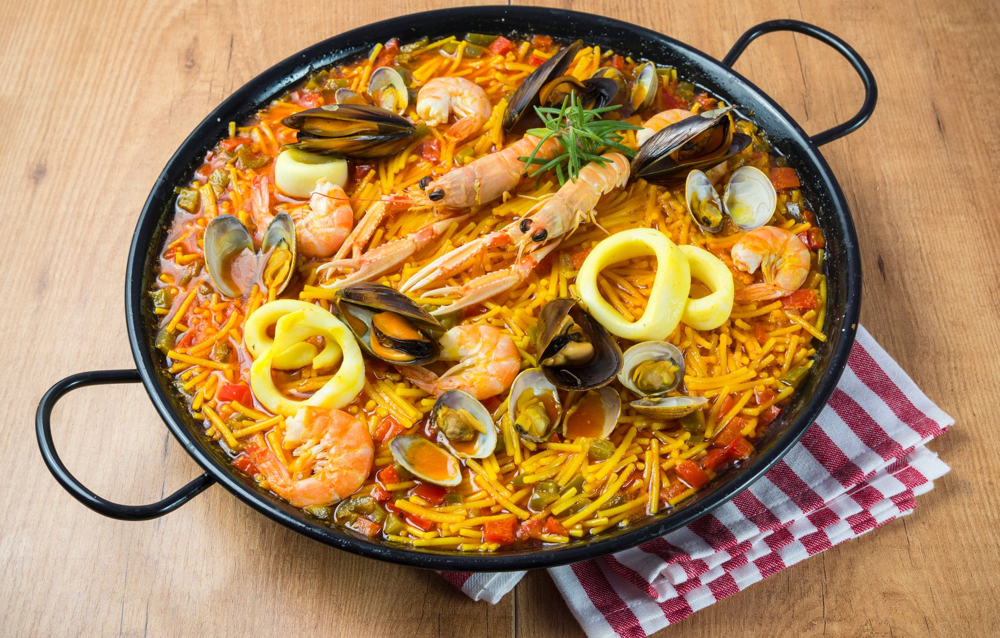

Fideua
Typical Valecian dish, but enjoyed all around Spain.
Ingredients (4 people)
- 4 langoustines
- 12 prawns
- 400 grams of monkfish
- 400 grams of fideos
- 1 crushed tomato (150 g)
- Vera dulce (sweet Paprika) (8-10 g)
- ½ a large onion, diced
- 2 cloves of garlic
- 2 eggs
- 200 ml of extra virgin olive oil (approx)
- Salt
- 1.5 litres of fish stock
Preparation
- Add the prawns and the langoustines to the Paella Pan with the hot oil and cook until golden.
- Once golden, after 2-3 minutes of stirring, remove them from the pan.
- Add the diced onion and garlic and fry.
- Then add the monkfish and cook until golden.
- Add the crushed tomato and paprika and continue frying, be careful not to burn the paprika.
- Add the fideos and fry for 3 minutes so that the flavours from the other ingredients in the pan are absorbed by the fideos.
- Add 1 litre of stock. The ratio is around just over 2 parts stock to 1 part fideos.
- Cook for 10 minutes on high heat.
- Taste it and add salt if necessary.
- Arrange the prawns and langoustines on top of the pasta in a nice pattern.
- Turn the heat to medium and leave to cook for another 10 minutes. If it looks like the stock is being absorbed very quickly, add a little more.
- Take it off the heat and leave to rest uncovered for 5 minutes so that any excess stock can be absorbed.
Step 1
Step 2
Step 3
Step 4
Step 5
Step 6
Step 7
Step 8
Step 9
Step 10
Step 11
Step 12